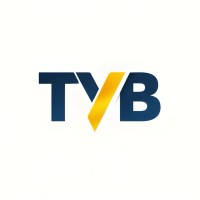

01
Metals
Copper, aluminum, zinc, and tungsten for industrial demand.

INTERNATIONALBangkok-Based Trading & Investment
TYB International connects Southeast Asia's resource strength with global demand through disciplined sourcing, strategic partnerships, and sustainable market expansion.
Who We Are
TYB International is a Bangkok-based trading and investment company specializing in metals, rubber, chemicals, commodities, and cross-border commerce.
With trusted regional partners and disciplined execution, we create reliable supply pathways that support industrial buyers, processors, and distributors in evolving global markets.
What We Trade
01
Copper, aluminum, zinc, and tungsten for industrial demand.
02
Natural rubber flows for manufacturing and regional export channels.
03
Reliable chemical sourcing with quality-focused partner networks.
04
Structured commodity movement aligned to demand cycles.
05
Regional agricultural trade with logistics-ready procurement.
06
Transaction and logistics execution across Asian trade routes.
Trade Network
Bangkok, Thailand — our base of operations for sourcing, logistics coordination, and regional partnerships across Southeast Asia.
Active trade relationships across Southeast Asia, with established commodity flows into broader Asian and international markets.
Connecting regional supply to global industrial buyers, processors, and distributors across metals, rubber, chemicals, and agricultural sectors.
Our Commitment
We prioritize vetted partners and transparent trade practices across every transaction.
We reduce volatility by combining regional intelligence with disciplined sourcing.
We are building trade systems designed to endure environmental and market pressures.
Contact
Connect with our team to discuss sourcing, investment, and cross-border trade opportunities.
enquiries@tyb-int.com